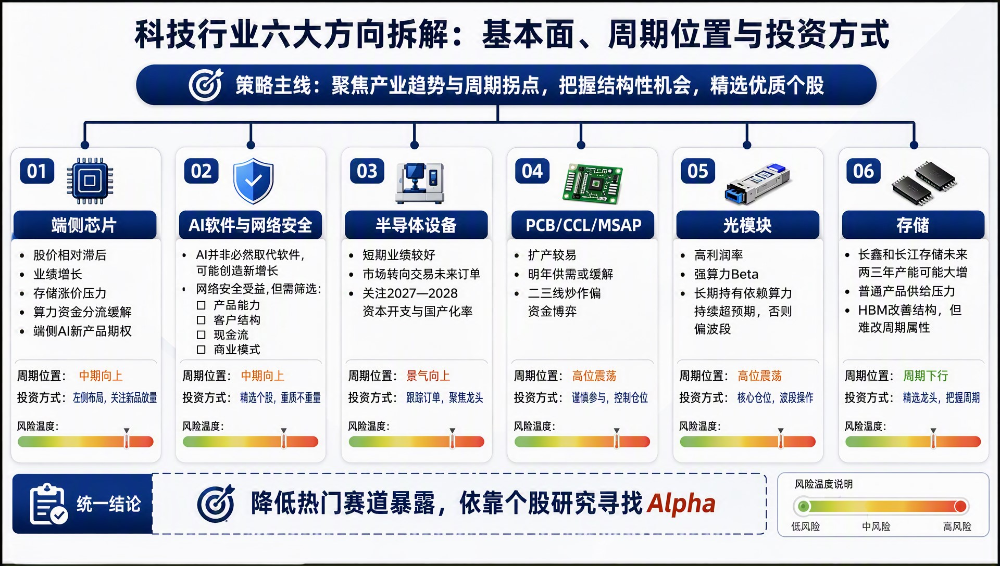
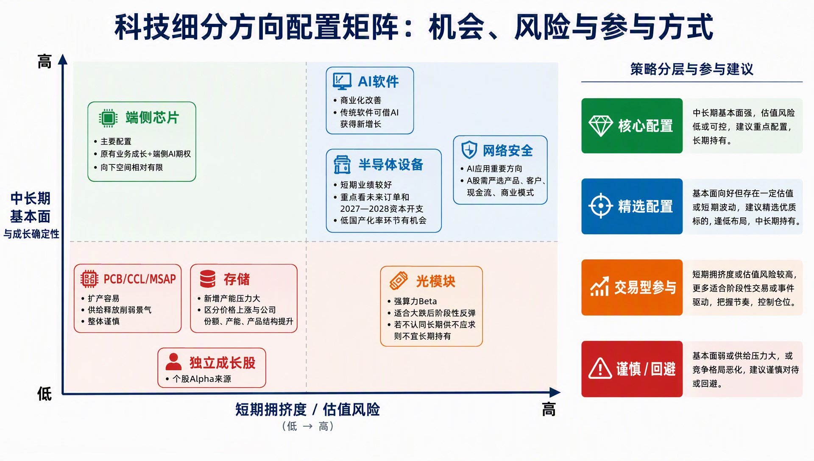

【260921】科技配置框架：组合构建、六大方向与细分矩阵
三张图串起科技板块的配置逻辑：先按四层框架构建组合，再拆解六大方向的基本面与周期位置，最后按拥挤度与确定性分层取舍。
科技组合构建系统：从宏观判断到标的筛选与再配置
四层过滤：宏观判断定方向，风险过滤挑环节，标的筛选看产品、客户与现金流，组合动作用核心持有+阶段性参与+谨慎回避，目标是在控回撤前提下获取个股 Alpha。

科技行业六大方向拆解：基本面、周期位置与投资方式
端侧芯片与 AI 软件周期中期向上、可左侧布局；半导体设备景气向上、跟随订单；PCB 与光模块高位震荡，宜控仓或波段；存储周期下行，精选龙头。

科技细分方向配置矩阵：机会、风险与参与方式
横轴为短期拥挤度与估值风险，纵轴为中长期基本面确定性。端侧芯片居左上、核心配置；AI 软件、半导体设备、网络安全精选配置；PCB 与存储偏谨慎；光模块交易型参与。

评论